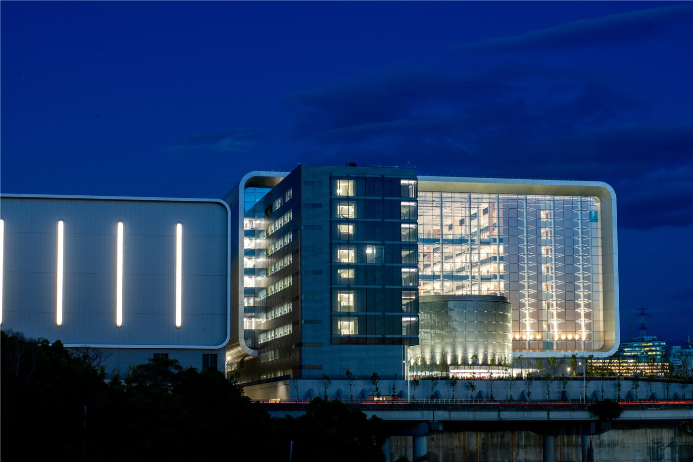

TSMC, 바이푸 단지 부지 개발 추진… 대만 내 증설 축 이동
TSMC가 바이푸 산업단지 부지 개발에 나선다. 첨단 공정 증설 수요가 이어지는 가운데, 대만 내 생산 거점 배치가 재조정되는 흐름의 일부로 읽힌다.
이문창 기자 · 2026.09.03
橋대만

TSMC가 바이푸 단지 내 부지를 개발한다는 계획이 공개됐다. 첨단 공정 수요 증가에 따른 생산 능력 확충 계획의 일부다.
광고 문의 · 300×250반도체 공장은 부지 선정에서 양산까지 수년이 걸린다. 전력과 용수, 인력 확보가 동시에 맞아야 하기 때문에, 부지 개발 단계의 발표는 실제 가동 시점보다 훨씬 앞서 나온다.
바이푸 단지는 대만 서북부 산업 축에 위치해 기존 신주 지역 연구·생산 클러스터와 연결된다. 인력과 협력업체 이동 거리를 줄일 수 있다는 점이 입지 조건으로 거론된다.
이번 계획은 TSMC의 해외 증설과 병행되는 구조다. 미국·일본·독일 투자와 별개로 대만 내 첨단 공정 중심 생산을 유지하는 이원 전략이 이어지는 것으로 해석된다.
인프라가 관건이다. 첨단 공정 공장은 대규모 전력과 초순수를 요구해, 지역 전력 계획과 수자원 배분이 함께 검토돼야 한다. 대만에서는 이 문제가 매번 정책 논쟁의 대상이 돼 왔다.
한국 반도체 산업에는 경쟁과 협력이 동시에 걸린다. 첨단 파운드리 경쟁은 심화되지만, 소재·부품·장비 공급망에서는 한국 기업과의 거래 관계가 유지되는 구조다.
부지 개발은 시작 단계다. 착공 시점, 공정 세대, 투자 규모 같은 핵심 항목은 후속 발표로 확인돼야 하며, 현시점에서 확정된 것은 개발 추진 방침 자체다.
출처·참고 (사실 확인용 — 본문은 직접 재작성)
· https://www.taipeitimes.com/
· https://www.ltn.com.tw/
· https://www.taipeitimes.com/
· https://www.ltn.com.tw/